Project 03 · No-code WebAR Tool
A no-code WebAR authoring tool that lets non-experts create, publish, and manage AR content without 3D or coding skills.
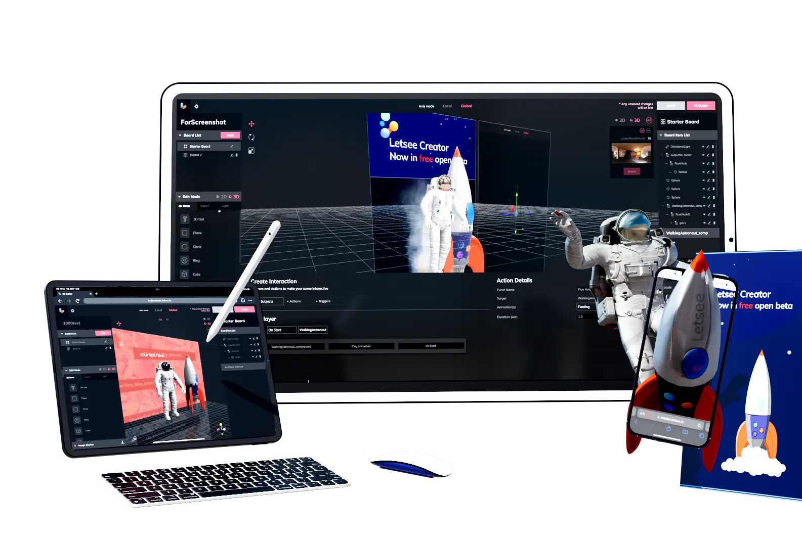
"How can we help non-experts create WebAR content without any 3D or coding skills?"
Enterprises were struggling with XR adoption because of technical complexity. B2B content managers and corporate trainers reported relying on outdated text-based manuals that failed to capture detail. Sales teams reportedly spent only 40% of work hours on actual selling : the rest was lost to navigating training material.
Target users wanted "a familiar interface like web content editors," prioritized instant WebAR publishing, and preferred guided templates over freeform 3D manipulation. They didn't want power; they wanted speed.
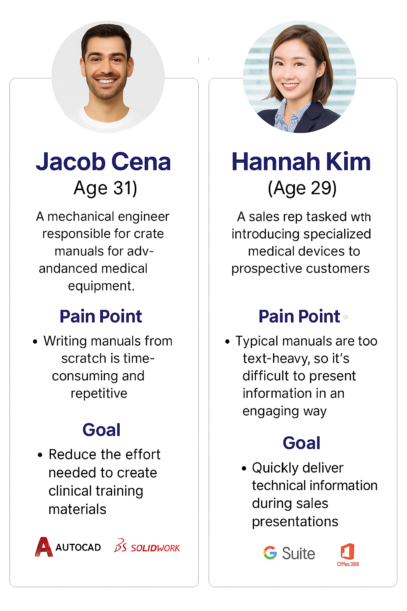
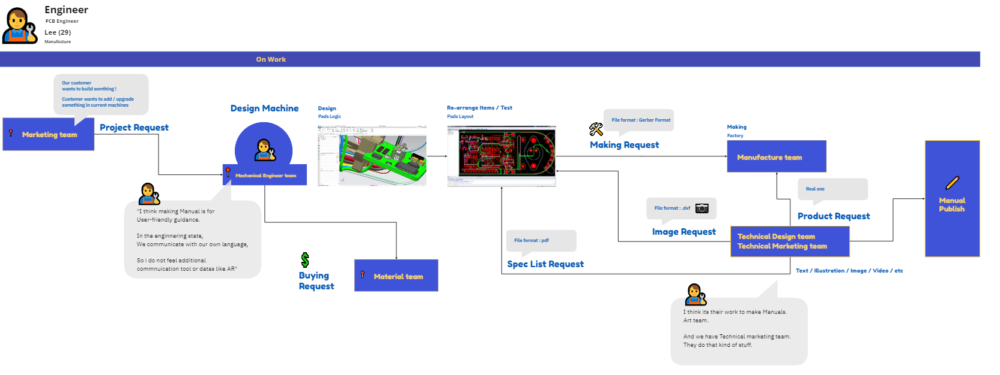
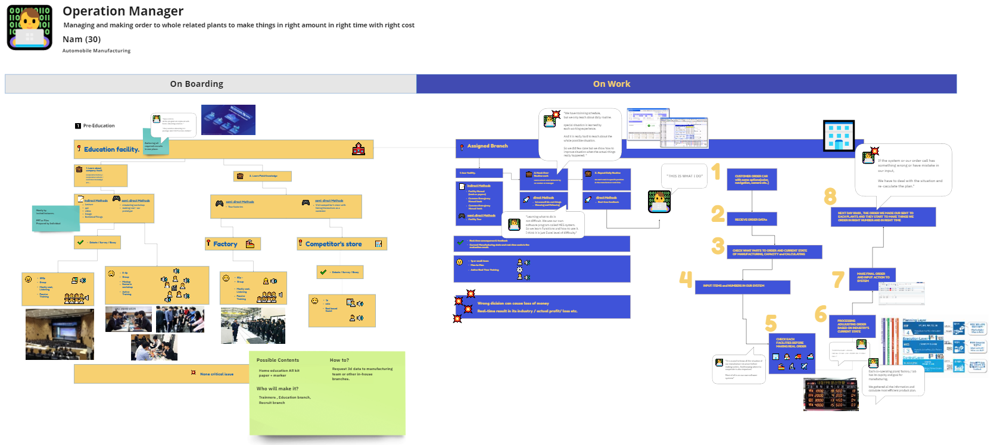
Mapped the full information architecture, then built an interactive prototype to validate the no-code authoring flow before engineering committed to specific stacks.
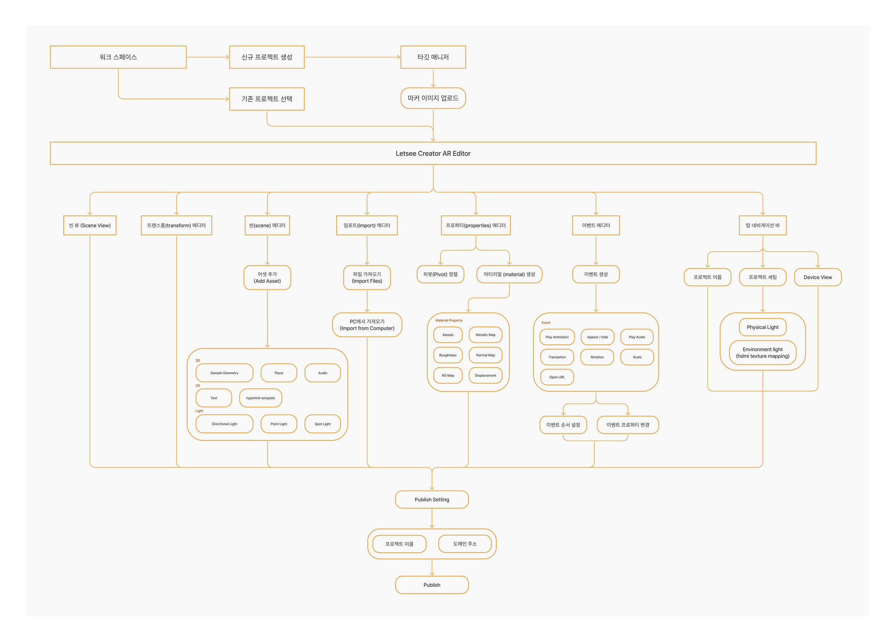
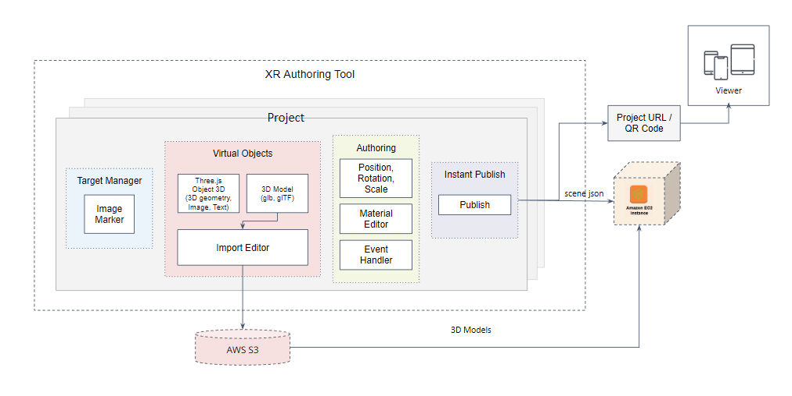
Click through the no-code authoring flow (Figma).
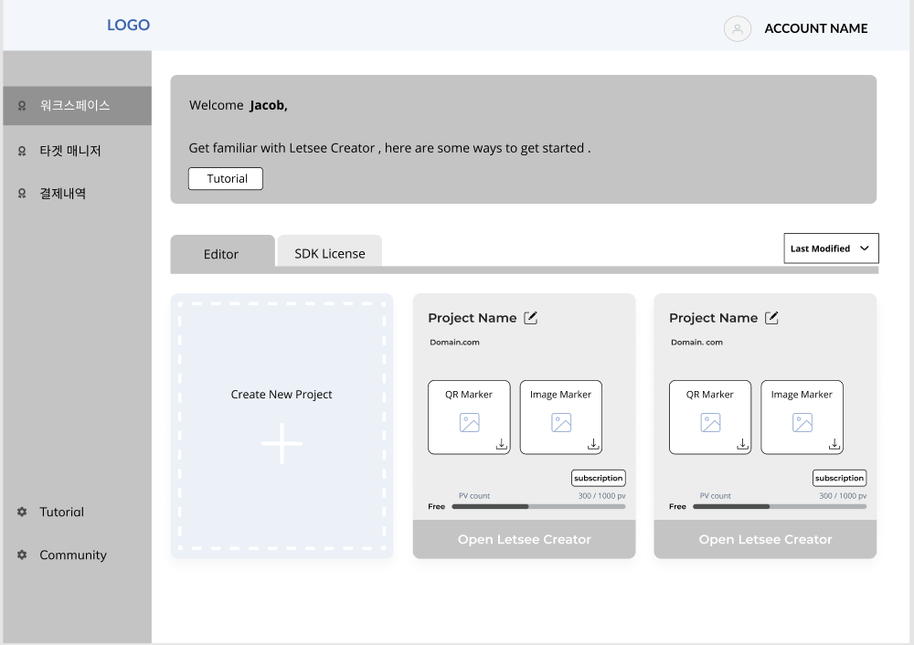
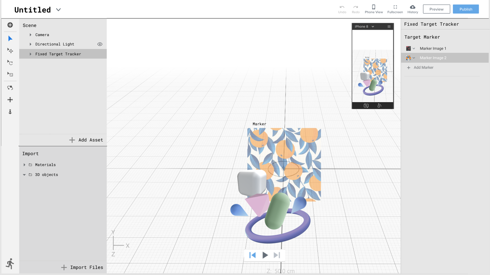
Ran guided usability sessions with target users (i.e. content managers and trainers) to test whether the no-code flow held up under real authoring tasks.
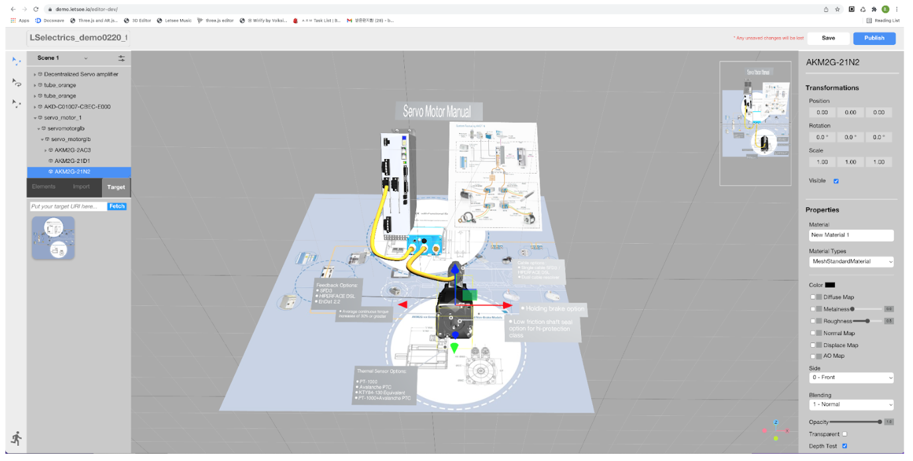
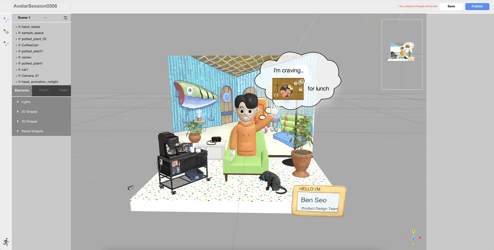
Refinements driven directly by usability findings :
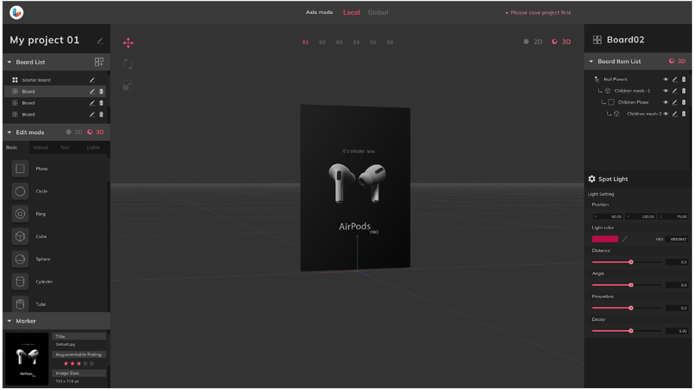
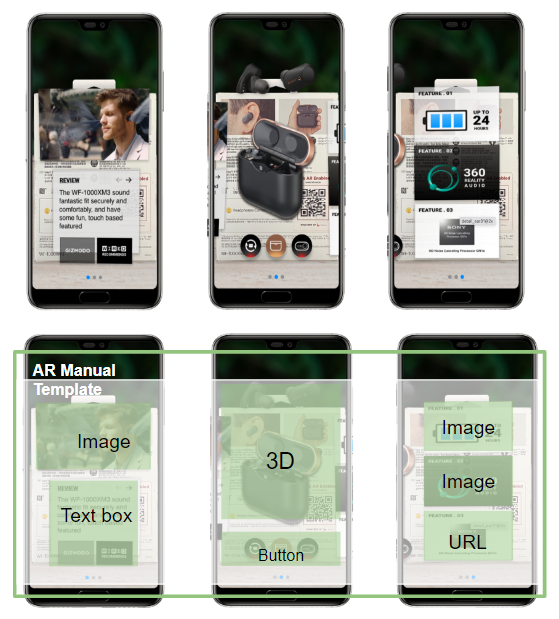
Usability testing session — observing first-time users build their first AR scene.
Letsee Creator was built to lower the barrier to AR content creation and make training more engaging and interactive. While the project involved many technical challenges, the main focus of the project was to leverage an emerging technology to address industries' everyday pain point, contributing to better learning[training] experiences, reducing training costs, and supporting better knowledge retention and performance.
Providing an easy to use experience of an emerging technology was much more challenging than showcasing a novel experience of the technology. Designing with accessibility and simplicity in mind was key to making the tool practical and usable for real-world applications.